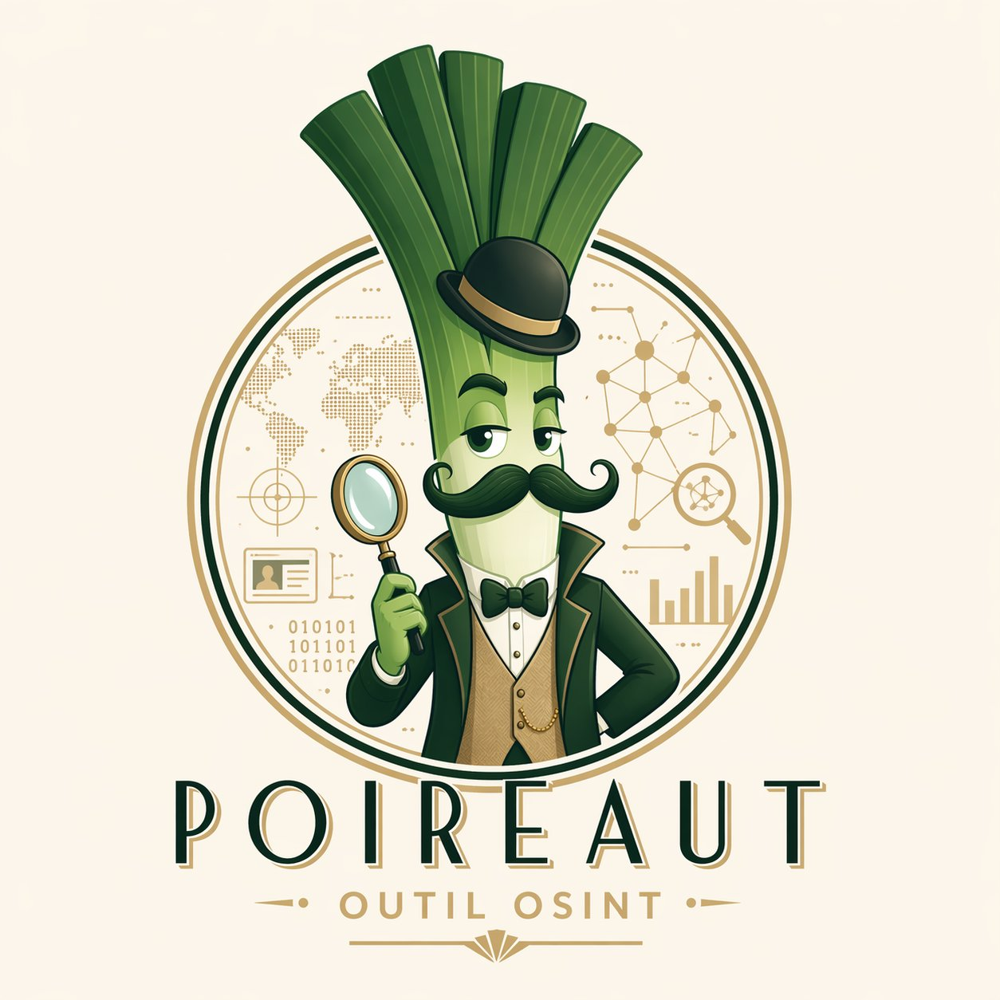

Chaque indice
a une histoire.
Poireaut orchestre une douzaine de collecteurs, une couche d'enrichissement de profils et un module de corrélation visuelle pour reconstruire le graphe d'une identité numérique — à partir d'un simple pseudo ou d'une adresse.
Mener l'enquête
Poireaut est prêt.
Poireaut
Un poireau en redingote, moustache cirée, loupe en main. Un clin d'œil à Hercule Poirot et à la tradition du détective méthodique qui relie patiemment les indices pour reconstituer une vérité.
- osint_core — bus pub/sub async, modèle d'entités Pydantic, corrélation par graphe.
- Collecteurs — Maigret, enrichment profils, Gravatar, Holehe, hash perceptuel d'avatars.
- Interface — pywebview, Cytoscape.js pour la toile, Fraunces & JetBrains Mono.
Poireaut n'exploite que des sources ouvertes. Il est destiné à la protection de votre propre empreinte numérique, à la recherche en sécurité défensive, au journalisme d'investigation, ou aux enquêtes dûment autorisées. Respectez le RGPD et les conditions d'utilisation des plateformes.